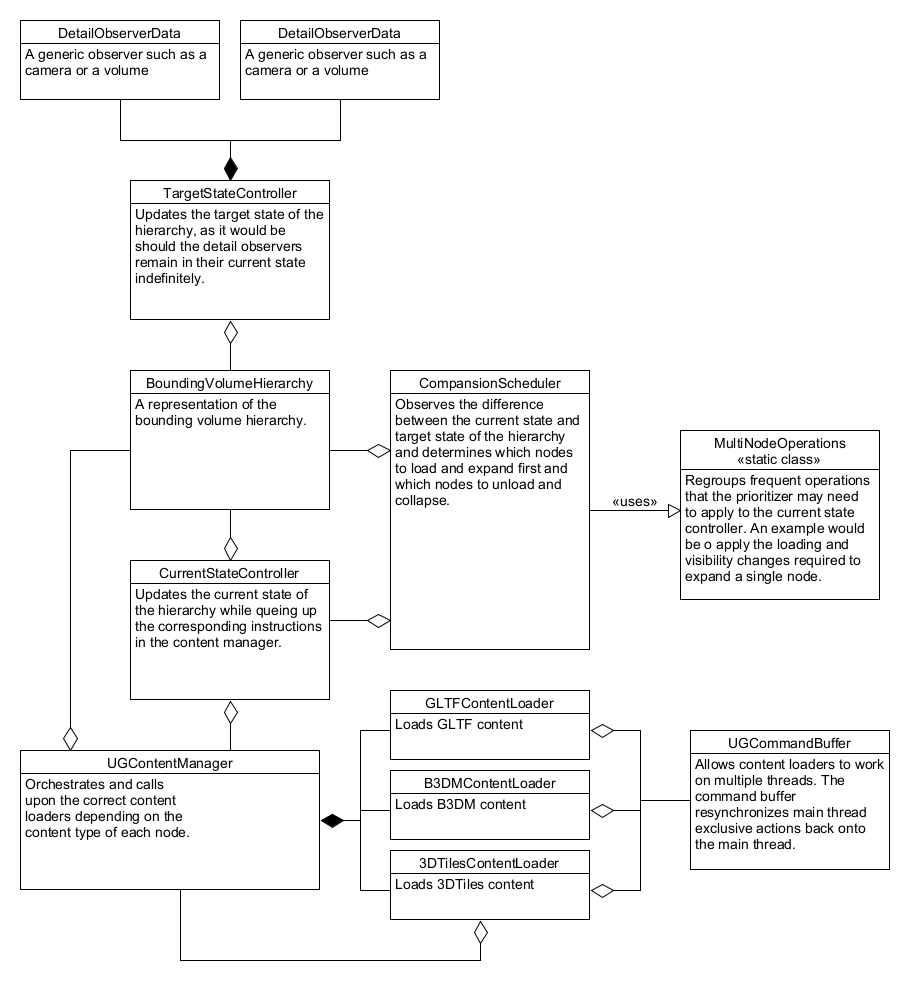
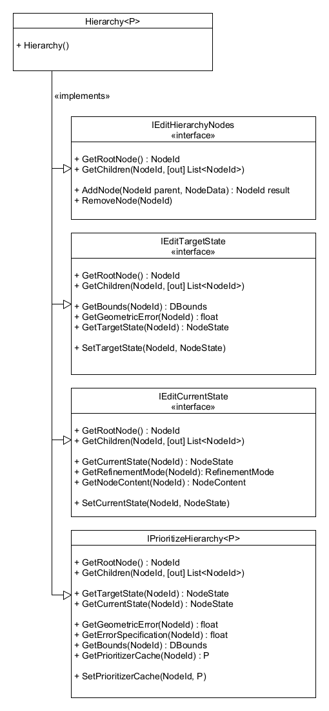
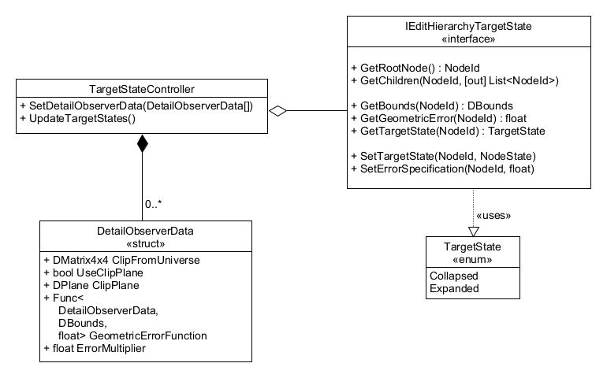
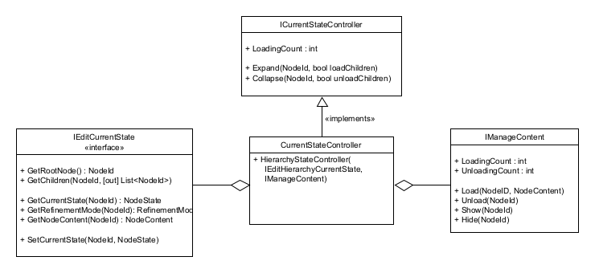

Universal Decoder
The universal decoder is a decoder implementation that has the intent of supporting many different content types within the same decoder, provided the given content is HLODed and can be represented within a bounding volume hierarchy. In its current state, the Universal decoder can be used to decode a subset of the 3DTiles specification, GLTF files as well as Unity GIS terrain data.
Internal Structure
Looking at the internal structure of the Universal Decoder class, we can see that it is composed of many simple classes that each play their own role in spatializing and loading pieces of content. Let us go over them in order to better understand their roles and responsibilities.
- DetailObserverData: The
DetailObserverDataclass is the starting point for any decoder. It represents cameras and sensors in the scene such that we can determine how much detail is required at any point in space. - TargetStateController: The
TargetStateControlleruses theDetailObserverDatain order to determine which parts of theBoundingVolumeHierarchyneeds to be expanded and further detailed and which parts should be collapsed, removing detail and, thus, reducing the overall memory footprint. TheHierarchyTargetControl, sets the target state of each node in the hierarchy such that the target state represents the steady state of the hierarchy. - BoundingVolumeHierarchy: The
BoundingVolumeHierarchysimply represents the state of system. All of the information relating to each node is contained within the hierarchy. However, the hierarchy is a passive class that does not do any processing. - CurrentStateController: The
CurrentStateControllertranslates commands to load, unload, show and hide nodes such that both the current state in the BVH is up-to-date and so that the corresponding instructions have been sent to theUGContentManager. - ExpansionScheduler: The
ExpansionSchedulerobserves the target state of each node and determines the order in which they should be expanded and/or collapsed in order to maximize the level of detail seen by the user as well as keep the system as reactive as possible when cameras change positions. It has a readonly relationship with the hierarchy (with the exception of a cache it can use to store implementation-specific data) and interacts with theCurrentStateControllerto change the state of the hierarchy. - UGContentManager: The
UGContentManagermakes use of multiple registeredUGContentLoaderin order to load nodes of various content types. It is also responsible for building a simultaneous download queue such that multipleUGContentLoader, which can be blocked temporarily by external resources, can work in parallel. - UGCommandBuffer: The
UGCommandBufferallows content loaders to work on threads that are separate from the main thread and resynchronizes a series of output commands with the main thread. This way, mesh, texture and material data can be deserialized off of the main thread, but be instantiate using UnityEngine types on the main thread.
Note: For the sake of simplicity, the diagram below does not illustrate the interfaces that link the classes to one another. For this purpose, detailed diagrams have been added in the subsequent sections of this document.

Bounding Volume Hierarchy
The BoundingVolumeHierarchy is responsible for storing data pertaining to each
node in the BVH as well as their target state and current state. Its only
purpose is to represent the state and relation of the nodes in memory.
This class is broken into four separate interfaces to limit how external classes can affect the BVH:
- IEditHierarchyNodes: Allows external classes to add and
remove nodes from the BVH. This is primarily be used by the UniversalDecoder
class for initialization as well as various
UGContentLoaderin order to dynamically expand the size of the BVH. - IEditTargetState: Allows the
TargetStateControllerto read the information required to determine and set the target state of each node. - IEditCurrentState: Allows the
CurrentStateControllerto set the current state of the node as well as query a node'sNodeContentsuch that it can also trigger the loading process. - IPrioritizeHierarchy: Allows the
CompansionSchedulerto read the target state of each node of the hierarchy, information pertaining to the node's error as well a cache that theCompansionSchedulercan use to store data required for its internal logic. Other than the aforementioned cache, this interface is essentially readonly.

Target State Controller Class
The TargetStateController communicates with the IEditHierarchyTargetState
interface, which allows it to explore the hierarchy, obtain information pertaining
to each node's geometric error and bounding volume in order to compute a target
state as well as an error specification.
The responsibility of computing the error specification has not be separated from that of computing the target state because, for the sake of computational efficiency, we do not want to be computing the error specification for all nodes, we simply want to compute the error specification of any node which has a parent with an expanded target state. The error specification of other nodes is irrelevant and does not need to be computed, thus saving a tremendous amount of CPU time.
The TargetStateController also needs to receive none or more DetailObserverData.
Should no DetailObserverData be provided, all target states should be set to
unloaded. The DetailObserverData is used to determine whether a node should be
expanded or collapsed, where a result of expanded from one detail observer
supersedes a result of collapsed from another.
Unlike the current state, the target state does not dictate whether a node should be loaded or not. It only determines whether a node is expanded or collapsed.

Current State Controller Class
The CurrentStateController has the purpose of ensuring that the current state
of the hierarchy is always valid and that the corresponding content has been
loaded and has the appropriate visibility status.
It exposes a simple set of methods which allows the CompansionScheduler to expand and
collapse nodes without needing to worry about whether a node is loaded or not
and without needing to worry about which instructions should be sent to the
UGContentManager.
Additionally, it provides information to the CompansionScheduler as to how many nodes
are currently being loaded such that it can throttle the number of nodes to
expand and limit the number of simultaneous web and IO operations.

ExpansionScheduler
The ExpansionScheduler observes the difference between each node's target state
and it's current state and progressively causes the two to converge. Using the
error metrics, it also determines the order in which nodes should be collapsed
and expanded.
It holds an essentially readonly interface to obtain the information it needs from
the BVH and it applies the desired changes via the ICurrentStateController.
The ExpansionScheduler also has a data cache that it can use on each node where it can store timers or other node-specific variables needed for internal logic.

Bounding Volume Hierarchy State
The BoundingVolumeHierarchy relies heavily on the concept of target and
current state. All nodes have both a target state and a current state.
Understanding how these states relate to each is key to understanding how the
bounding volume hierarchy functions.
Target State
The target state represents the steady-state of each node without consideration for optimizations. In short, it expresses the visibility of the nodes should the DetailObserverData remain unchanging for an infinite amount of time.
It is a binary state that can either be set to Expanded or Collapsed. When
collapsed, this indicates that it's children should not be visible and that the
content of the given node should be. When expanded, this indicates that it's
children should be visible but the given node should respect the replacement
mode parameter. However, a change of state may take multiple frames to come into
effect, which brings us to the current state.
Current State
The current state represents the actual state of a node and its relevant content. Unlike the target state, the current state is not a single binary but rather a triplet of binary states. Each of these binary states are detailed below:
| Name | False | True |
|---|---|---|
| Expanded | Collapsed, children are hidden | Expanded, children may be visible |
| Loaded | Node content has not yet been loaded | Node content has been loaded |
| Visible | Node content is hidden | Node content is visible |
Given the above states, it is obvious that some states are not possible and cannot make sense. Here are a few cases that need to be safe-guarded against:
- A node cannot be visible and unloaded, regardless of the expanded state.
- If a node is expanded and its refinement mode is additive, it cannot be hidden.